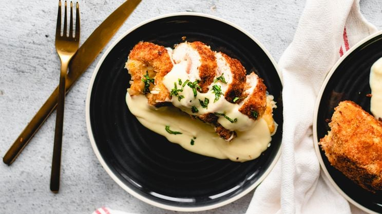

Wat eten we vandaag?
Recepten
Recepten
Recepten
Recepten
Makkelijke recepten voor vanavond
Gesponsord · Vandaag, 10:19
Recepten · Gisteren, 16:00
Inspiratie · Gisteren, 14:00
Lees meer
Inspiratie · 8 nov 2024
Inspiratie · Gisteren, 14:00
Inspiratie · Gisteren, 12:00
Inspiratie · 13 nov 2024
Inspiratie · 12 nov 2024
Dagelijks culinair genieten met de verrassende recepten en tips van Culy.
Culy is hét culinaire platform waarbij dagelijks genieten leidend is. We reiken je handvatten aan om plezier te ondervinden in het koken, geven je zelfvertrouwen om je draai te vinden in de keuken en zorgen dat je altijd indruk maakt bij je vrienden. Met eigen Culy Homemade-recepten met lekkere foodfotografie, culinaire inspiratie, de beste restaurants en handige kooktips. Alles om dagelijks te kunnen genieten.